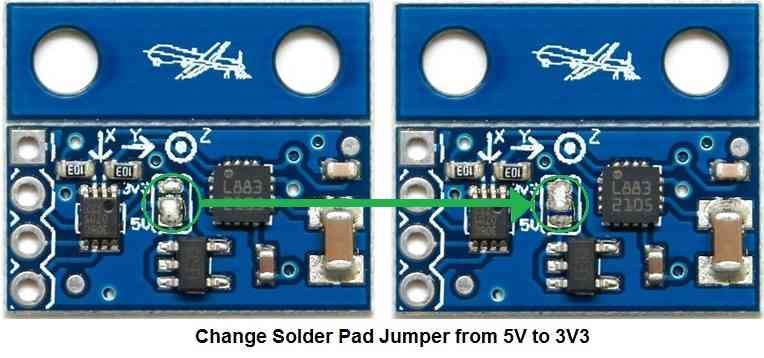
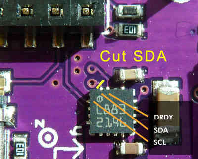

Archived: External Compass¶
This page covers the installation of a stand-alone external compass ( hmc5883l-triple-axis-magnetometer). You may alternatively use the combined GPS+Compass module.
Overview¶
The 3DR external compass should only be used with the APM series of autopilots, its 5 volt signal output is not compatible with Pixhawk which require 3.3 volts. For the Pixhawk use the 3DR combination GPS / Magnetometer module.

If you’re having trouble with magnetic noise affecting your compass on-board the APM 2.5 board, you may want to switch to an external compass that you can mount further away from noise sources such as motors and your power wiring and batteries.
Magnetometers are most strongly influenced by DC magnetic fields and your batteries and the ESC primary power wiring are the worst offenders.
Your primary goal is to distance the magnetometer from batteries, DC battery wiring and the wiring to your ESCs.
It will also help to twist the battery and ESC power and ground wires wires together where possible.
It is also important to keep the magnetometer distanced from magnetic metallic objects (use nylon or non magnetic stainless screws and hardware in its vicinity and use aluminum or nylon standoffs.).
Notes:
If the Magnetometer board is mounted in its forward facing direction (Drone logo on the tab facing forward and in the opposite direction of the Y arrow) the (COMPASS_ORIENT ) parameter will need to be set to (Normal) or “0”.
If you have the Y arrow pointing to the front (Drone on tab pointing to the back), set (COMPASS_ORIENT ) to (Yaw 180).
You will need to set the Magnetometer Orientation Parameter (COMPASS_ORIENT ) in the Mission Planner Advanced Parameter List correctly to accommodate the Magnetometer’s orientation.
If the Autopilot board is used in an alternate orientation (or upside down), the (COMPASS_ORIENT ) parameter will need to also be adjusted to accommodate the Autopilot boards orientation as well as its own. (They are additive).
It can be confusing, but all orientations in 45 degree increments and even upside down can be accommodated.
This Quick Setup Procedure will always work and allow you to set up your compass even if you use a non-3DR magnetometer.
Set the (COMPASS_ORIENT ) Yaw parameter so the direction your airframe is currently pointing agrees with the HUD in Mission Planner.
Now turn your air frame right or left and if the compass correctly follows the direction it is pointed you are done.
If the compass turned in the opposite direction of your airframe set (COMPASS_ORIENT ) Roll to 180 (flips the compass over).
If you need to set Roll to 180 (COMPASS_ORIENT ) will also need to include the Yaw from B. above (Example: Yaw 180 Roll 180).
Connecting to the APM 2.5¶
1. Purchase an HMC5883L magnetometer breakout board. Ensure the magnetometer board is set to use 3.3 volts (the APM 2.5’s I2C port uses 3.3 volts, not 5 volts). The magnetometer board is supplied with the 5 volt pad solder bridged and must be modified as shown below.
{kind=link}
2. Looking at the below picture, cut the jumper trace in the middle of the APM 2.5 board. This disables the SDA line to the board’s internal magnetometer, rendering it inert.

3. The APM 2.5 I2C connector needs a 4 pin DF13 connector. Cut off one and and strip and tin the four wires.
4. Connect the DF13’s 4 wires to the compass breakout board. Note that the wires will not be one to one. Pin 1 on the DF13 connector will not go to pin 1 of the compass board. The standard 3DR cable has one red wire and three black wires. Substitute your wire colors accordingly. Solder the wires as follows:
Red wire on end of connector (+3.3v) goes to the VCC (or +3.3v) pad on the compass board (see labels on board for location). This is the wire closest to the interior on the APM 2.5 board.
Wire next to red wire (SCL) goes to the SCL pad on the compass board.
Wire next to wire next to red wire (SDA) goes to the SDA pad on compass board.
Black wire on end of connector (ground) goes to ground pad on compass board. This is the wire closest to the edge of the APM 2.5 board.
5. The photo below depicts a MultiCopter with the Magnetometer mounted on top away from the DC magnetic fields generated by the Power Wiring and ESCs.
Double-sided foam tape works well for this.
The GPS modules antenna must be on top.
In the picture below, we’ve mounted the board “components up with pins forward”.
Autopilot board orientation and magnetometer orientation must be used to calculate the COMPASS_ORIENT parameter.

Connecting to the APM2.0¶
The APM 2.0 requires the cutting of the SDA trace on the top of the GPS / Magnetometer / SDA carrier board.
{kind=link}
Also, leave the pads on the external Magnetometer board bridged for 3.3 volts rather than switching it to 5 volts..
The remainder of the procedure is exactly as explained for the APM 2.5.
{kind=link}